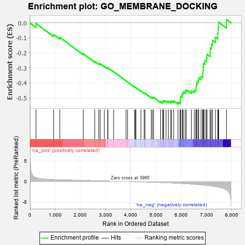
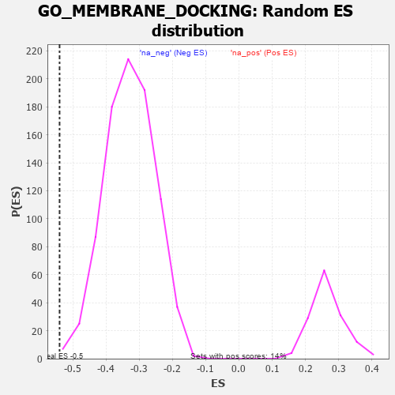

| | | Dataset | 7d |
| Phenotype | NoPhenotypeAvailable |
| Upregulated in class | na_neg |
| GeneSet | GO_MEMBRANE_DOCKING |
| Enrichment Score (ES) | -0.54024106 |
| Normalized Enrichment Score (NES) | -1.6394147 |
| Nominal p-value | 0.0011655012 |
| FDR q-value | 0.066180505 |
| FWER p-Value | 1.0 |
Table: GSEA Results Summary

Fig 1: Enrichment plot: GO_MEMBRANE_DOCKING
Profile of the Running ES Score & Positions of GeneSet Members on the Rank Ordered List
| PROBE | GENE SYMBOL | GENE_TITLE | RANK IN GENE LIST | RANK METRIC SCORE | RUNNING ES | CORE ENRICHMENT | | 1 | NSF | | | 243 | 0.947 | -0.0038 | No |
| 2 | STX17 | | | 940 | 0.497 | -0.0777 | No |
| 3 | NEDD1 | | | 1186 | 0.449 | -0.0959 | No |
| 4 | STX16 | | | 2116 | 0.289 | -0.2052 | No |
| 5 | YKT6 | | | 2571 | 0.217 | -0.2565 | No |
| 6 | DCTN3 | | | 2731 | 0.193 | -0.2711 | No |
| 7 | SCFD1 | | | 2783 | 0.185 | -0.2723 | No |
| 8 | RAB10 | | | 2952 | 0.157 | -0.2891 | No |
| 9 | STX6 | | | 3087 | 0.138 | -0.3021 | No |
| 10 | CHP1 | | | 3089 | 0.138 | -0.2983 | No |
| 11 | RAB8A | | | 3319 | 0.102 | -0.3244 | No |
| 12 | SFI1 | | | 3810 | 0.026 | -0.3856 | No |
| 13 | NEK2 | | | 3871 | 0.016 | -0.3927 | No |
| 14 | STX7 | | | 4147 | -0.033 | -0.4266 | No |
| 15 | EXOC4 | | | 4182 | -0.039 | -0.4298 | No |
| 16 | VPS11 | | | 4202 | -0.041 | -0.4310 | No |
| 17 | STX5 | | | 4400 | -0.077 | -0.4538 | No |
| 18 | ESYT3 | | | 4528 | -0.101 | -0.4669 | No |
| 19 | STX2 | | | 4562 | -0.108 | -0.4681 | No |
| 20 | CEP97 | | | 4812 | -0.160 | -0.4950 | No |
| 21 | USO1 | | | 4855 | -0.168 | -0.4955 | No |
| 22 | VAMP8 | | | 4905 | -0.179 | -0.4966 | No |
| 23 | DCTN2 | | | 5175 | -0.243 | -0.5238 | No |
| 24 | CDK1 | | | 5264 | -0.262 | -0.5274 | No |
| 25 | CEP70 | | | 5282 | -0.267 | -0.5220 | No |
| 26 | RAB7A | | | 5302 | -0.271 | -0.5167 | No |
| 27 | PLK4 | | | 5397 | -0.295 | -0.5202 | No |
| 28 | CEP76 | | | 5485 | -0.315 | -0.5223 | No |
| 29 | NDE1 | | | 5578 | -0.339 | -0.5243 | No |
| 30 | VPS45 | | | 5618 | -0.350 | -0.5193 | No |
| 31 | TTBK2 | | | 5700 | -0.376 | -0.5189 | No |
| 32 | RAB13 | | | 5870 | -0.425 | -0.5282 | Yes |
| 33 | DCTN1 | | | 5950 | -0.454 | -0.5253 | Yes |
| 34 | CNTRL | | | 5961 | -0.459 | -0.5135 | Yes |
| 35 | B9D1 | | | 5962 | -0.459 | -0.5005 | Yes |
| 36 | CENPJ | | | 5968 | -0.460 | -0.4880 | Yes |
| 37 | CKAP5 | | | 6032 | -0.482 | -0.4823 | Yes |
| 38 | VAMP3 | | | 6043 | -0.487 | -0.4697 | Yes |
| 39 | PLK1 | | | 6082 | -0.500 | -0.4603 | Yes |
| 40 | ROCK1 | | | 6152 | -0.520 | -0.4543 | Yes |
| 41 | B9D2 | | | 6196 | -0.535 | -0.4445 | Yes |
| 42 | RALB | | | 6399 | -0.617 | -0.4525 | Yes |
| 43 | CEP41 | | | 6516 | -0.669 | -0.4482 | Yes |
| 44 | CLN3 | | | 6580 | -0.699 | -0.4363 | Yes |
| 45 | ALMS1 | | | 6590 | -0.704 | -0.4174 | Yes |
| 46 | MKS1 | | | 6607 | -0.715 | -0.3991 | Yes |
| 47 | VPS18 | | | 6659 | -0.743 | -0.3845 | Yes |
| 48 | OFD1 | | | 6692 | -0.758 | -0.3670 | Yes |
| 49 | C2CD3 | | | 6783 | -0.802 | -0.3556 | Yes |
| 50 | CEP72 | | | 6846 | -0.839 | -0.3396 | Yes |
| 51 | AHI1 | | | 6860 | -0.848 | -0.3171 | Yes |
| 52 | NINL | | | 6869 | -0.851 | -0.2940 | Yes |
| 53 | IQCB1 | | | 6882 | -0.856 | -0.2712 | Yes |
| 54 | SNX3 | | | 6934 | -0.893 | -0.2523 | Yes |
| 55 | NPHP4 | | | 6991 | -0.931 | -0.2329 | Yes |
| 56 | CEP83 | | | 7020 | -0.950 | -0.2094 | Yes |
| 57 | CFTR | | | 7143 | -1.030 | -0.1956 | Yes |
| 58 | SYT1 | | | 7148 | -1.033 | -0.1668 | Yes |
| 59 | CETN2 | | | 7200 | -1.070 | -0.1429 | Yes |
| 60 | FBF1 | | | 7241 | -1.111 | -0.1164 | Yes |
| 61 | CEP89 | | | 7354 | -1.223 | -0.0958 | Yes |
| 62 | KCNB1 | | | 7444 | -1.327 | -0.0693 | Yes |
| 63 | CEP78 | | | 7464 | -1.354 | -0.0333 | Yes |
| 64 | VAPB | | | 7482 | -1.378 | 0.0037 | Yes |
| 65 | NPHP1 | | | 7791 | -2.041 | 0.0228 | Yes |
Table: GSEA details [plain text format]

Fig 2: GO_MEMBRANE_DOCKING: Random ES distribution
Gene set null distribution of ES for GO_MEMBRANE_DOCKING